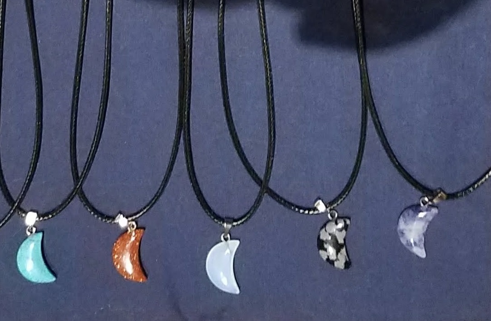

Sometimes the transition from parts to a whole seems more like magic. How a ball of yarn can turn into a scarf or a bit of thread and few bobbles can turn into a beautiful and unique piece of jewelry.
While most crafts don't actually require many tools to do, colleting tools of trade can become a hobby of it's own.


Stringz includes all creations using yarn or thread. Though most often this means products created through kniting or crochet.

Text goes here.

Text goes here.

Text goes here.
Craft is defined as a skill used in making something. Everything from woodworking to baking can be considered crafts. Most crafts are required to better our lives, even if they have been taken over by industry and machines in large warehouses. Keeping the skills alive from one generation to the next will help us, not only to connect to our past, but to create for our future.